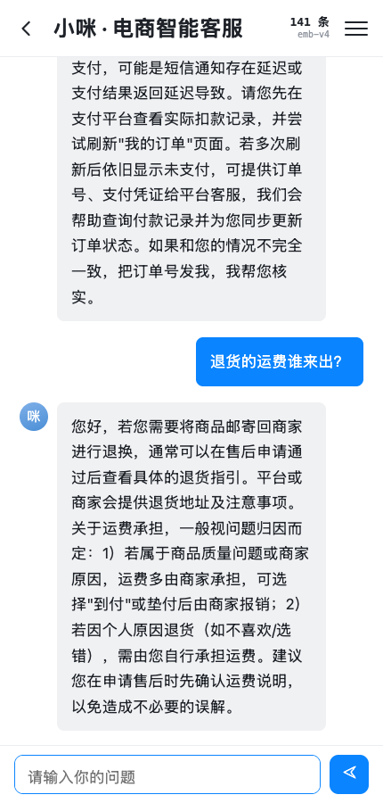
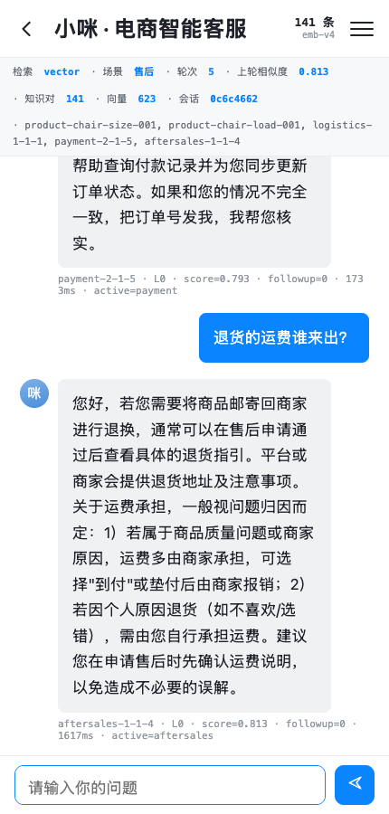

把 v1.0 的「场景短清单 + 模型选编号」升级为「语义召回 + 编号间接寻址」，知识库扩到四个场景、141 条知识对，并给出可复现的检索评测与场景级阈值校准。
这次改造的核心不是“接一个向量库”，而是把不确定的部分收拢到可归因的位置：模型只负责两件事——判断场景、在候选里挑编号；答案原文、阈值、过滤条件、占位符渲染全部由代码执行。因此任何一个错误都能落到“分诊错 / 召回错 / 选号错 / 渲染错”四类之一。
3 个真实商品从事实表派生 80 条；存量 61 条方案经清洗、去平台名、状态决策树压缩后迁入，原编号即 pair_id。
产品 0.60、物流 0.56、支付 0.71、售后 0.71。实验证明同一阈值跨场景复用会一边漏答、一边硬答。
dev/test 各 32 条、问法不复用语料同义问；给出随机基线、意图级命中、跨意图误答三项，防指标虚高。
v1.0 的确定性链路在“三场景、61 条方案”时是够用的：分诊后把场景内十几条方案标题交给模型选编号。但两类变化让它失效：
| 维度 | v1.0（旧） | v1.3（本次） |
|---|---|---|
| 场景 | 物流 / 支付 / 售后 | 产品 / 物流 / 支付 / 售后（四类） |
| 召回 | 场景内短清单，模型直接选编号 | 向量 KNN + 分差判定 + 必要时模型选编号 |
| 知识规模 | 61 条方案 | 141 条知识对 / 623 条检索文档 |
| 答案来源 | 方案正文 | 知识对原文（模型只输出 pair_id） |
| 阈值 | 无相似度概念 | 场景级阈值，dev 集扫描校准 |
| 评测 | 冒烟用例，看选号命中率 | 检索层可复现评测 + 阈值扫描 + 随机基线 |
| 前端 | 三场景快捷问 | 四场景 + 知识库角标 + 检索可视化 |
| 目标 | 衡量方式 | 结果 |
|---|---|---|
| G1 四类场景都能答，且分诊准 | 场景准确率 ≥ 92% | 未单独测；端到端抽测 7/7 正确，待建分诊评测 |
| G2 口语化问法能召回正确知识 | Recall@1 ≥ 85%，Recall@3 ≥ 95% | test R@1 96.9%，R@3 100% |
| G3 答案只来自知识库 | 接地率 100%，数字幻觉 0 | 代码按 pair_id 取原文，参数走事实表/占位符 |
| G4 语料可迭代、可回归 | 每次改语料一键重跑评测 | recall_eval.py 可重复跑，结果写 JSON |
| G5 改知识不发版 | 热更新 + 索引重建接口 | POST /admin/reindex，增量复用向量 |
整条链路是“同步函数 + 一次模型调用 + 一次向量查询”，没有额外服务、没有消息队列。选型的唯一标准是：在千级语料、本地单机的约束下，把可解释性和可维护性放在吞吐之前。
flowchart TB U[用户消息] --> T[分诊 triage.j2
场景 + 是否追问 + 置信度] T -->|追问| R[query rewrite
补商品名 / 拼上轮上下文] T -->|首轮| E[embed_query · text-embedding-v4] R --> E E --> K[(kb_vec KNN k=20
scenario 硬过滤 · top-5)] K --> G{top1 ≥ 场景阈值?} G -->|否| L2[L2 澄清
列 2~3 个相似问题] G -->|是| S{top1-top2 ≥ 0.05?} S -->|是| P[按 pair_id 取 answer 原文] S -->|否| M[select_pair.j2
只输出 pair_id 或 null] M --> P P --> C{conditions 与订单状态匹配?} C -->|否| L4[L4 转人工] C -->|是| V[占位符渲染 → 回复 / SSE done]
| 层 | 选型 | 版本 | 在本项目中的角色 |
|---|---|---|---|
| Web | FastAPI + Uvicorn | 0.162 / 0.54 | 同步端点、SSE 流式、单进程 |
| 编排 | LangGraph | 1.2.19 | /chat 走图，节点内部复用确定性函数 |
| LLM | LiteLLM + DeepSeek Chat | 1.106.6 | 唯一模型出口，temperature=0，JSON 模式失败重试一次 |
| Embedding | 阿里云百炼 text-embedding-v4 | — | OpenAI 兼容协议，1024 维，单批 ≤ 10 行 |
| 向量索引 | sqlite-vec | 0.1.9 | vec0 虚拟表，与 SQLite 同栈，零额外服务 |
| 存储 | SQLite（原生 sqlite3） | 3.53 | 会话、知识真值、检索文档、向量、元数据同库 |
| 模板 | Jinja2 | 3.1.6 | 分诊 / 选号提示词；答案占位符渲染 |
人可读、可 diff、进 Git。编号、场景、子场景、商品、标准问、答案、条件、关键词、审核状态与版本。删索引不丢数据。
一条知识对拆成“标准问 + N 条同义问”，每条一个 rowid；向量表按 rowid 对齐，可整表重建。
记录模型、维度、语料版本、构建时间。维度与配置不一致时拒绝服务，防止“换模型忘重建”。
新增 last_product_id，供跨商品追问消歧；last_user() 供非商品场景的追问改写取上下文。
vec0 的 scenario 列不能写成 +scenario，辅助列无法参与 KNN 过滤；② 归一化向量后 distance 是 L2 距离，相似度必须换算成 1 - d²/2，不能直接拿距离比阈值。
语料的难点不是“写得多”，而是每条答案都能追到真值：商品参数追到 product_catalog.yaml，订单相关只引用订单字段，时效金额一律占位符。三个商品、四类场景共 141 条，分布如下。
产品咨询占 56.7%，是本次扩量主体；物流/支付/售后来自存量迁移，后续按缺口补齐。
| 来源 | 做法 | 结果 | 关键约束 |
|---|---|---|---|
| 产品咨询（新） | 先定 3 个 SKU 的事实表，再由事实派生问答 | 餐椅 28 / 吧椅 26 / 连衣裙 26，共 80 条 | 答案必须能映射回 catalog 字段；价格/库存/活动/时效只写占位符 |
| 存量方案（迁移） | migrate_plans.py：清洗 → 补同义问 → 写语料 JSONL |
物流 21 / 支付 22 / 售后 18，共 61 条 | 保留原编号作为 pair_id；答案只清洗不改写；同义问带缓存 |
${订单发货状态}、${订单物流状态} 的方案，压成一条“未发货时…；已发货未揽件时…；运输中时…”的分情况话术。拆成多条会让同一标准问出现多份答案、检索无法区分。last_product_id 过滤，无上下文且 top3 跨商品、分差又小才走澄清。
| 指标 | 数值 | 说明 |
|---|---|---|
| 知识对 | 141 | kb_pairs，含 80 条产品（draft）与 61 条迁移（published） |
| 检索文档 | 623 | 标准问 + 同义问，按 text_hash 增量 |
| 向量 | 623 | 1024 维，入库前 L2 归一化 |
| 全量构建耗时 | ≈22.4 s | 每批 10 条调用 Embedding |
| 构建成本 | ≈0.02 元 | 约 2.8 万 token，扩到 270 条仍可忽略 |
| 增量重建 | 0 新嵌入 | 语料未变时全部复用已有向量 |
只测“embed → KNN → top-k”这一段，不调分诊与选号模型，所以结果确定、可回归。评测问是人工口语改写，不复用语料里的同义问，避免“拿训练集考自己”。
| 指标 | 口径 | 为什么需要它 |
|---|---|---|
| R@1 / R@3 / R@5 | 期望 pair_id 是否出现在前 k 个候选 | 看召回广度，R@3 是上线门槛 |
| 意图@1 | top1 与期望同场景、同子场景；产品还要同 product_id | 问“承重多少”命中“体重大能坐吗”可接受，不该判错 |
| MRR | 期望条目排名倒数的均值 | 区分“第 1 名就对”和“第 3 名才对” |
| 跨意图误答 | top1 分数 ≥ 阈值，但意图不一致 | 最危险的指标：自信地答错 |
| 随机基线 | 1 / 该场景知识对数 | 证明提升来自模型，不是运气 |
dev 用于调阈值，test 只用于验收；test 各指标均不低于 dev，未出现“调参过拟合”。
| 集合 | 样本 | R@1 | 意图@1 | R@3 | R@5 | MRR |
|---|---|---|---|---|---|---|
| dev | 32 | 81.2% | 93.8% | 96.9% | 96.9% | 0.891 |
| test | 32 | 96.9% | 96.9% | 100% | 100% | 0.984 |
| 场景 | R@1 | 意图@1 | MRR | top1 均分 | 观察 |
|---|---|---|---|---|---|
| 产品 | 87.5% | 87.5% | 0.938 | 0.731 | 同一商品近意图条目多，分数偏低 |
| 物流 | 100% | 100% | 1.000 | 0.790 | 模板化话术，区分度高 |
| 支付 | 100% | 100% | 1.000 | 0.761 | “退款/支付/券”边界清晰 |
| 售后 | 100% | 100% | 1.000 | 0.767 | 流程类问法形态稳定 |
产品场景是唯一有差距的：8 条中 1 条同商品近意图误答，其余全部正确或同子场景命中。
只允许在 dev 上扫（0.30~0.90，步长 0.01），要求作答率 ≥ 80%，最大化“意图答对 − 意图答错”，平手取更高阈值。结论是不同场景必须用不同阈值：
| 场景 | 阈值 | 原因 |
|---|---|---|
| 产品 | 0.60 | 短问句口语化，余弦普遍 0.6~0.8；阈值过高会把大量正确答案挡在门外 |
| 物流 | 0.56 | “什么时候发货 / 几天到”句式差异大，需更宽召回面 |
| 支付 | 0.71 | 正负样本分得开，可以用高阈值压误答 |
| 售后 | 0.71 | 流程类问法稳定，高阈值不伤召回 |
评测问人工改写，同义问只进语料不进评测；语料扩充后不得回头改评测问。
test 在验收时只跑一次；报告同时给出 dev 与 test，差距即过拟合信号。
每个场景给随机召回 1/N（产品 0.013、物流 0.048、支付 0.045、售后 0.056）。
用页面连续问 5 轮，覆盖商品、跨商品追问、物流、支付、售后。全部命中 L0（直接答），单轮 1.4~2.1 秒。
| 轮次 | 用户问法 | 场景 | 命中编号 | 相似度 | 级别 |
|---|---|---|---|---|---|
| 1 | 餐椅座高是多少？ | product | product-chair-size-001 | 0.797 | L0 |
| 2 | 那能坐多重 | product（追问） | product-chair-load-001 | 0.888 | L0 |
| 3 | 我买的什么时候发货？ | logistics | logistics-1-1-1 | 0.765 | L0 |
| 4 | 扣了钱但订单显示未支付 | payment | payment-2-1-5 | 0.793 | L0 |
| 5 | 退货的运费谁来出？ | aftersales | aftersales-1-1-4 | 0.813 | L0 |
第 2 轮是本次改造的典型场景：用户只说“那能坐多重”，省略了商品。系统在 product 场景下用 last_product_id 补商品名再向量化，得到“餐椅能坐多重”，分数 0.888，没有串到吧椅。


?debug=1 调试视图。每条回复带 pair_id、相似度、兜底级别与耗时。| 级别 | 触发条件 | 用户看到什么 |
|---|---|---|
| L0 | top1 ≥ 场景阈值，分差够或选号成功 | 知识对原文（≥0.80 不加限定语；0.70~0.80 补一句“如果不对，把订单号发我”） |
| L2 | top1 低于阈值但仍有次优候选 | 2~3 个相似问题让用户选，不硬答 |
| L3 | 无候选 | 澄清一次：“是发货、支付、退换货还是商品本身的问题？” |
| L4 | 模型返回 null / 条件不匹配 | 转人工，不硬答 |
改动集中在“存储层、召回层、接线层”三处；plan_db.py 与旧链路完整保留，改一个环境变量即可回滚。
| 文件 | 类型 | 改动要点 |
|---|---|---|
| app/llm/embedding.py | 新增 | OpenAI 兼容客户端；空白折叠与截断；L2 归一化；自动分批（≤10）；逐条校验维度 |
| app/stores/kb_db.py | 新增 | 四张表 DDL；连接加载 sqlite-vec；KNN + 场景过滤；分数换算；threshold(scenario)；商品名/别名读取 |
| app/pipeline.py | 改 | 新增向量召回分支；追问改写；分差直取 / 模型选号；L0/L2/L3/L4；按场景阈值；中置信补限定语 |
| app/graph.py | 改 | 召回节点直连 END，避免原条件边把 L2/L4 覆盖成 L3；状态增 last_product_id |
| app/api.py | 改 | 连接统一走 kb_db.connect()；/health 增知识库统计；新增 /admin/reindex；SSE 增 retrieval_mode / top_score |
| app/stores/session_db.py | 改 | last_product_id 兼容旧库 ALTER；新增 last_user() |
| app/config.py | 改 | EMBED_*、RETRIEVAL_MODE、场景级 RECALL_THRESHOLDS；SCENARIOS 增 product |
| app/prompts/triage.j2 | 改 | 增 product 场景与边界规则（保修/售后政策归 aftersales，不归 product） |
| app/prompts/select_pair.j2 | 新增 | 候选只给 pair_id + 问句；输出编号或 null；代码校验编号在候选内 |
| scripts/migrate_plans.py | 新增 | 61 条方案清洗、状态树压缩、LLM 补同义问（带缓存）、产出语料 JSONL |
| scripts/build_index.py | 重建 | DDL 复用 kb_db；text_hash 增量；维度不一致自动全量；默认含 draft，--published-only 切上线口径 |
| evals/recall_eval.py | 新增 | R@1/@3/@5、意图@1、MRR、跨意图误答、随机基线、阈值扫描 |
| evals/recall_dev/test.jsonl | 新增 | 各 32 条四场景评测问，人工口语改写 |
| web/index.html | 改 | 知识库角标、四场景快捷问、debug 状态条与逐条调试标签 |
| .env / requirements.txt | 改 | 新增 Embedding 与检索配置；依赖增 openai、sqlite-vec |
| 风险 | 现状 | 影响 | 对策 |
|---|---|---|---|
| 订单状态未接通 | app/tools/order.py 仍是固定 mock，未读 data/mock/orders.jsonl | 带 conditions 的知识对无法按真实订单匹配，会误走 L4 | 先接订单查询，再把 5 条状态树拆回多条知识对 |
| 语料流水线不完整 | 缺口盘点、分批生成、去重、规则校验 4 个脚本未写 | 语料从 141 扩到 270 只能靠手工，质量闸门形同虚设 | 补 coverage_report / gen_corpus / dedupe_corpus / validate_corpus |
| 评测覆盖不全 | 只测检索层；分诊与生成未分层 | “召回对但分诊错”不会在指标里暴露 | recall_eval.py --e2e 跑分诊准确率；建生成抽检 |
| 防虚高缺三项 | 真实来源占比、0.85 相似度剔除、SHA256 冻结未实现 | 语料扩量后指标可能虚高 | 入库前比对评测集；哈希写入 kb_meta |
| API Key 曾明文暴露 | Key 写在对话里 | 额度被盗用 | 立即在百炼控制台轮换，仅保留在 .env |
/chat 走 LangGraph，/chat/stream 直调 pipeline。改一处容易漏另一处，建议后续统一到一条链路。
当前是整段生成后按 10 字切片推送，首字节延迟等于整段生成时间，不是真流式。
RETRIEVAL_MODE=plans 时不会并行跑向量召回打日志，灰度期缺少两路对比数据。
阈值绑定当前语料分布，每次语料实质变更都要重扫 dev；没有自动告警。
orders.jsonl 到订单工具，让 conditions 真正生效。validate_corpus 与 coverage_report，再做生成与去重。RETRIEVAL_MODE=plans。